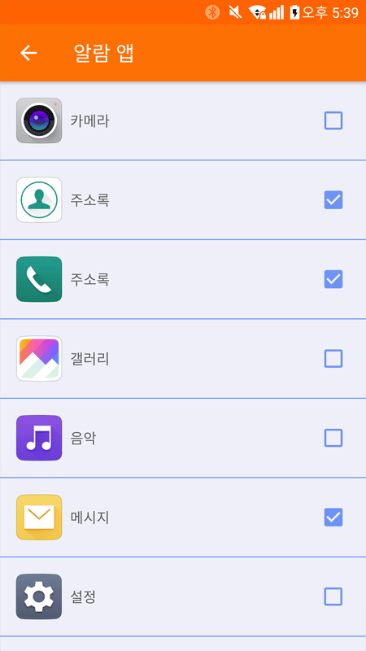

play 사용 설명서
1. 기기등록
*등록 절차를 진행하기 전에 제품의 전원을 켜주시기 바랍니다.

메인 메뉴의 ‘내 기기'메뉴를 클릭합니다.

기기 목록중 ‘Jeegy Play’ 항목을 클릭합니다.
* 기기가 등록되어 있지 않으면 새로운 기기를 검색하고 등록되어 있으면 기기설정 화면으로 이동 합니다.
스마트폰과 기기를 가까이 두고 검색을 시작합니다. 여러대가 같이 있을경우에는 기기가 검색되지 않습니다. 다른 기기들과 떨어진 곳에서 검색을 시작해주세요.
하단의 ‘기기등록’ 버튼을 클릭하면 제품 등록이 완료되고 자동으로 연결 됩니다.
* 검색된 기기가 없을때는 제품의 전원이 들어와 있는지 확인해 주시기 바랍니다.
* 다른기기와 연결되어 있을때는 제품이 검색되지 않습니다.
* 기기가 여러개가 검색될 경우에는 가까운순으로 목록에 표시됩니다.
2. 기기연결 및 해제
2.1 기기연결
우측 블루투스 버튼을 클릭하면 블루투스를 연결하거나 해제할 수 있습니다.
2.2 기기삭제
* 기기가 연결되어 있으면 삭제할 수 없습니다. 메인에서 연결을 해제하거나 블루투스 기능을 해제하신 후 시도해 주시기 바랍니다.
Play 기기 설정화면에서 삭제 버튼을 누르면 기기를 삭제 할 수 있습니다.
3. 기기설정
메인메뉴에서 ‘내 기기'메뉴를 클릭하여 이동합니다.
등록된 기기를 클릭하면 설정화면으로 이동합니다.
① 연결알람: 기기가 연결되거나 끊겼을때 알람이 울립니다.
② 24시간 표시: 기기의 시간을 12시간 또는 24시간으로 표시되도록 변경합니다.
③ 라이딩 정보 표시 설정 : 기기의 라이딩 정보를 변경할 수 있습니다.
각항목을 설정하면 기기의 해당위치의 표시 정보를 변경할 수 있습니다.
④ 전화 알람: 스마트폰에 전화가 수신되면 기기에서 알람이 표시됩니다.
* 전화가 끊기면 기기의 알람도 사라집니다.
⑤ 메시지 알람 : 선택된 앱에서 메시지가 수신되면 기기에서 알람이 표시됩니다.
* 안드로이드 기기의 경우 처음 알람을 활성화 할때 안드로이드의 알람 읽기 권한을 승인해야 사용할 수 있습니다.
‘메시지 알람'을 활성화 하면 하단에 ‘메시지 앱 선택' 항목이 표시됩니다. 클릭하여 메시지 앱 선택화면으로 이동합니다.

선택한 앱에서 메시지가 수신되면 기기에서 메시지 알람이 표시됩니다.
* 스마트폰에서 해당 메시지를 확인하면 메시지 알람은 사라집니다.
⑥ 펌웨어 업데이트: Play의 펌웨어를 업데이트 합니다.
* 기기가 연결되어 있어야 가능합니다.
‘시작'버튼을 누르면 업데이트가 시작됩니다.
* 업데이트중 전원을 끄면 기기에 치명적인 손상이 생길 수 있습니다.
5. 자가진단
5.1 기기가 연결되지 않을때
스마트폰 기종에 따라 연결시간이 차이(약 1분 이내)가 있습니다.
연결시도가 1분이상 지속된다면 아래와 같은 방법으로 해결할 수 있습니다.
* 스마트폰의 블루투스가 켜져 있는지 확인
* 기기의 전원이 켜져 있는지 확인
* 스마트폰의 블루투스를 껐다가 켭니다.
* 기기의 전원을 껐다가 켭니다.
* 스마트폰의 전원을 껐다가 켭니다.
* 앱에서 로그아웃한 후 스마트폰의 애플리케이션 관리자에서 앱의 데이터를 삭제합니다.
* 앱을 재설치 합니다
위와 같은 방법으로도 해결되지 않으면 구매처 및 support@cssmart.co.kr로 문의 주시기 바랍니다.
5.2 기기의 전원이 켜지지 않을 때
기기의 배터리가 방전되었을 가능성이 있습니다. CR2032 배터리를 교체 후 다시 시도해 주시기 바랍니다. 교체 후에도 전원이 켜지지 않으면 구매처나 고객지원센터로 문의 주시기 바랍니다.
5.3 기기가 전원이 꺼지지 않을때
도난방지 기능 특성상 기기가 스마트폰과 연결이 되어 있으면 전원을 끌수 없습니다.
앱에서 연결을 해제한 후 전원을 끌 수 있습니다.
5.4 기기와 통신이 원활하지 않을때
블루투스는 사용환경에 따라 수신감도가 달라질 수 있습니다.사용 전에 사용환경을 확인해주시기 바랍니다.
사용환경 연결 거리(상황에 따라 차이가 있을 수 있습니다.
① Wifi가 적은 개활지 : 약 50 ~ 70m
① Wifi가 많은 개활지 : 약 30m
② 유리벽 : 약 20m
⑤ 철문 콘크리트 벽 : 약 10m
④ 건물 : 10 ~ 20m
⑤ 통신에 영향을 미치는 재질의 휴대폰 케이스 : 정상 상태의 절반 거리
신호를 약하게 만드는 원인은 아래와 같습니다.
① 장애물(문,벽,건물 등)에 의한 신호 감소
① 휴대폰 케이스에 의한 신호 감소
② 많은 Wifi에 의한 신호 충돌